手搓魔法 · 元素能量牌 第八轮：干净的能量 + 统一的强化语言
设计稿（离线绘制，进游戏前会用游戏渲染器复核）。两个方案：① 能量环（第七轮优化版）和 ② 能量球（新方案）。颜色（红蓝黄黑）和编号大小都沿用第七轮，强化的表现方式两个方案完全一样。
一、第七轮为什么显得糊、脏
| 原因 | 这一轮怎么改 |
|---|---|
| 电光用的是一张半透明的“划痕”贴图，缩小后变成一圈毛刺噪点 | 去掉所有贴图，全部用干净的矢量形状：实色渐变、清晰的边线、平滑的光 |
| 多层光晕、电纹、条纹叠在一起，边缘被糊掉 | 每张牌只保留 1 层外发光（范围封顶）+ 1 条清晰的内沿线；能量感靠运动（流光、光点、脉冲）而不是叠层 |
| 选中时的电纹是一大片噪点 | 选中时改成几道清晰的细闪电线，沿环跳动 |
| 强化徽章像贴纸，和能量环不是一个画风 | 见下一节：强化改成和本体同材质、同颜色的“轨道” |
二、强化的统一语言：轨道 + 节点
有强化 = 本体外多一圈细轨道。轨道用这张牌自己颜色的浅色，和本体是同一种光、同一个颜色，读起来是本体能量向外扩了一圈，不是贴上去的东西。
· 有没有强化：看有没有轨道，扫一眼就知道。
· 是哪种强化：轨道左下角一个小节点，里面是白色线条图标，下面是数值（魔攻蓝、倍率红，和计分气泡一致）。
· 动效：一颗光点沿轨道慢慢转，选中时转得快。
· 印章：轨道左上一颗小菱形宝石（印章颜色）；特效：改变本体的材质（银辉光泽扫过、虹纹描边、七彩外光、虚影半透明），数值在左侧。
· 所有标志都在左边，手牌叠起来也不会被下一张挡住。
· 万素、石化本身就改了本体（四色 / 石头），轨道用中性的香槟色。
· 有没有强化：看有没有轨道，扫一眼就知道。
· 是哪种强化：轨道左下角一个小节点，里面是白色线条图标，下面是数值（魔攻蓝、倍率红，和计分气泡一致）。
· 动效：一颗光点沿轨道慢慢转，选中时转得快。
· 印章：轨道左上一颗小菱形宝石（印章颜色）；特效：改变本体的材质（银辉光泽扫过、虹纹描边、七彩外光、虚影半透明），数值在左侧。
· 所有标志都在左边，手牌叠起来也不会被下一张挡住。
· 万素、石化本身就改了本体（四色 / 石头），轨道用中性的香槟色。
三、两个方案
| ① 能量环 | ② 能量球 | |
|---|---|---|
| 本体 | 粗色环 + 本色深底 | 整颗本色的玻璃能量球 |
| 平时的能量 | 一段柔和的流光沿环流动 + 两颗小光点沿环跑 + 环内侧淡淡的充能光 | 球心透出本色的光 + 一圈圈细光环从中心向外脉冲扩散 |
| 选中 | 外发光变强、流动 / 脉冲加快、出现几道清晰的细闪电 | |
| 计分 | 一道干净的本色光圈向外扩散 + 短暂发亮 | |
| 主色面积 | 大 | 最大（整颗球都是主色） |
四、动效（4 秒循环：平时 → 选中 A、K → 依次计分）
①能量环
②能量球
五、手牌 1:1（手机实际像素，选中 A、K）
①能量环 · 带强化 / 印章 / 特效
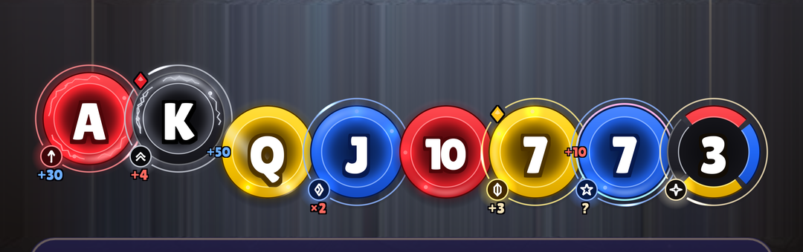
②能量球 · 带强化 / 印章 / 特效
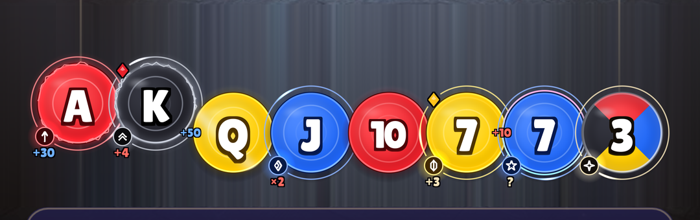
第七轮（对比）
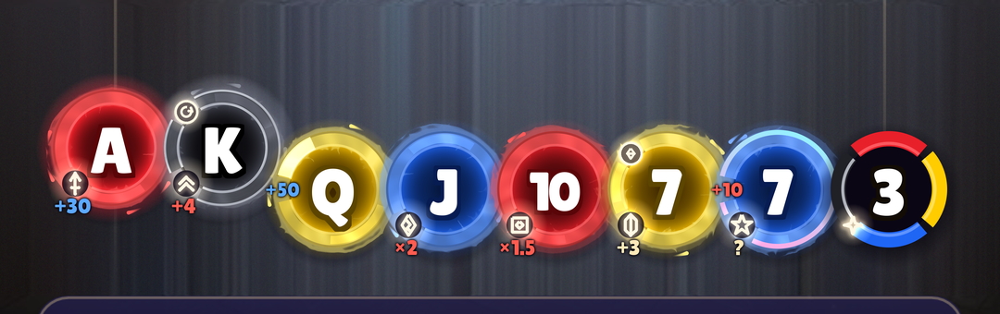
只看颜色和编号
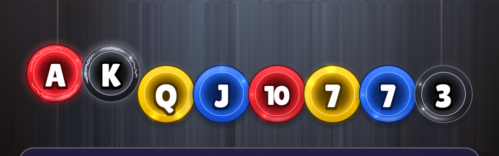
扫一眼（缩到手机上的真实观感）
①
②
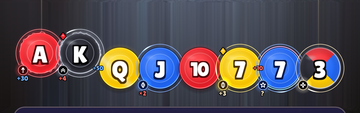
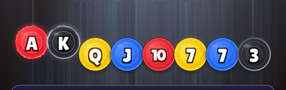
已知小问题：手牌叠得紧时，后一张的轨道会压到前一张一点点；进游戏时会把轨道再往里收一点。
六、全部强化（2 倍）
①能量环
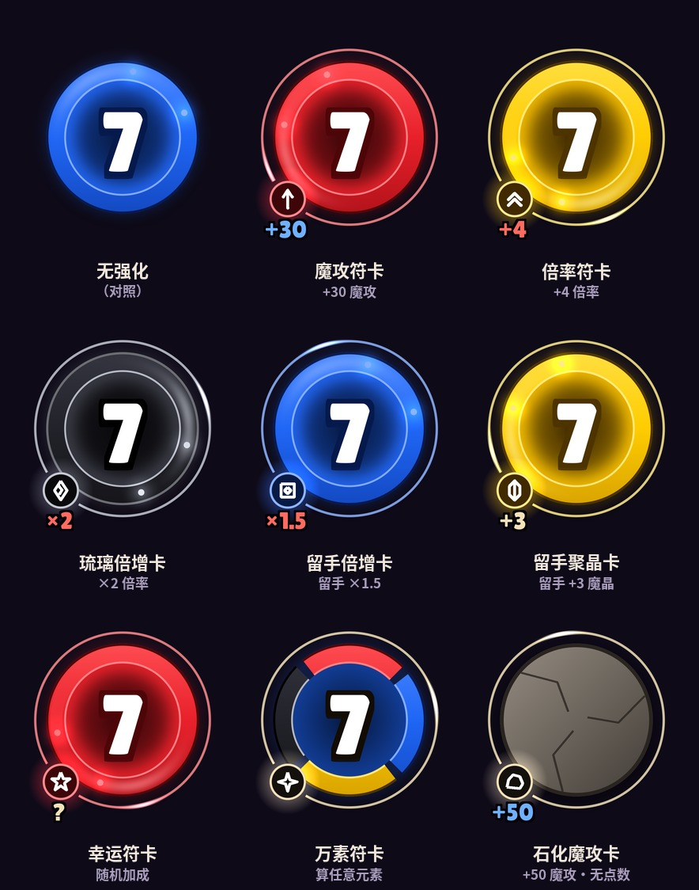
②能量球
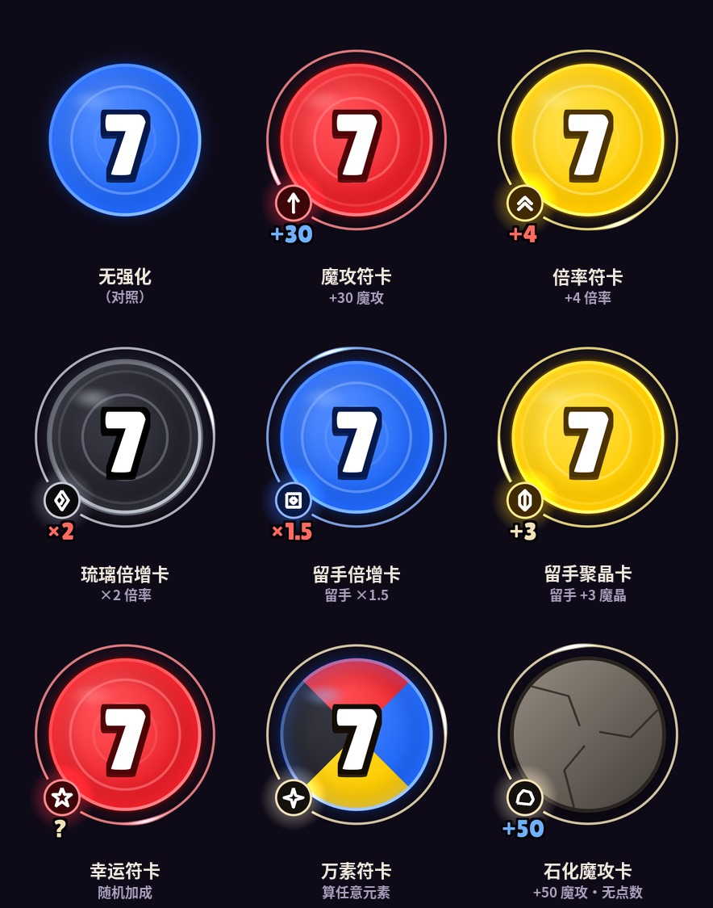
印章 / 特效 / 叠加
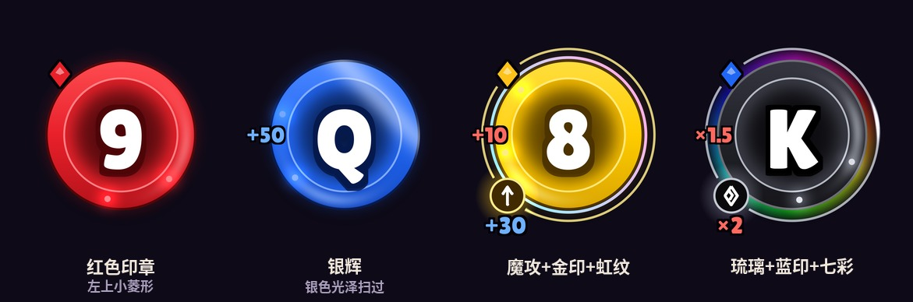
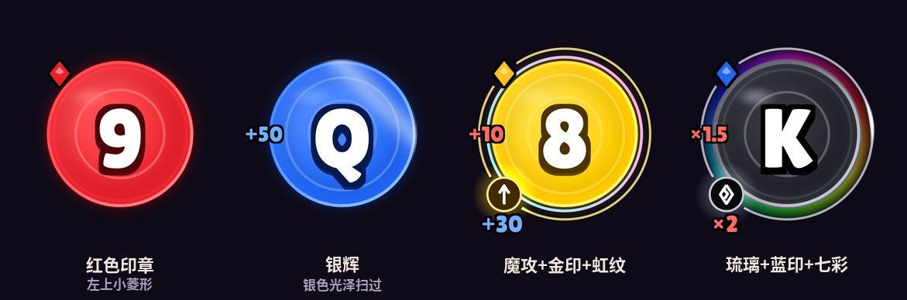
七、基础四色（2 倍）+ 平时 / 选中
①
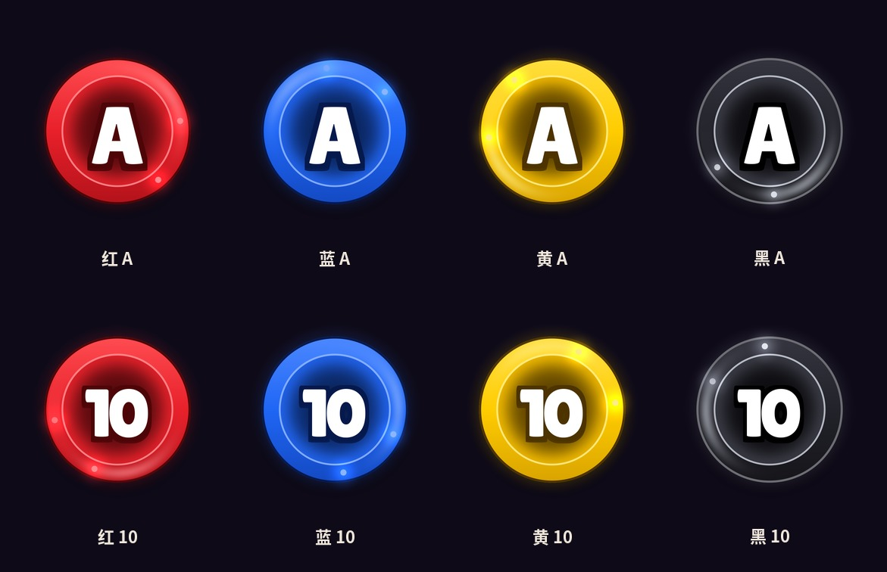
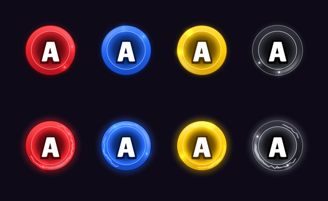
②
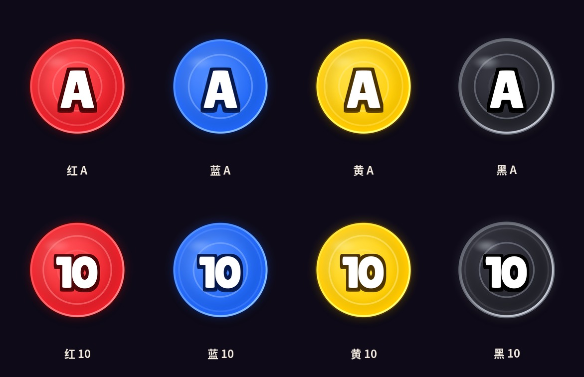
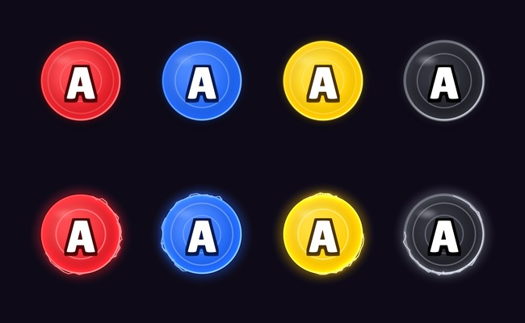